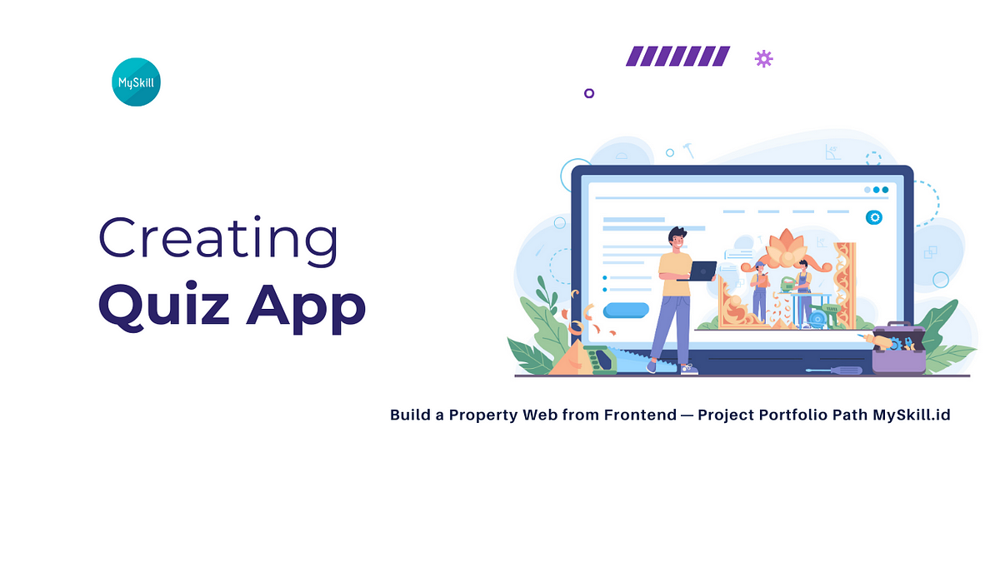
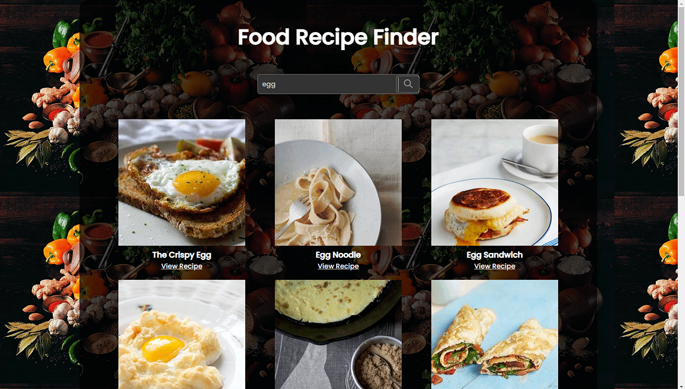
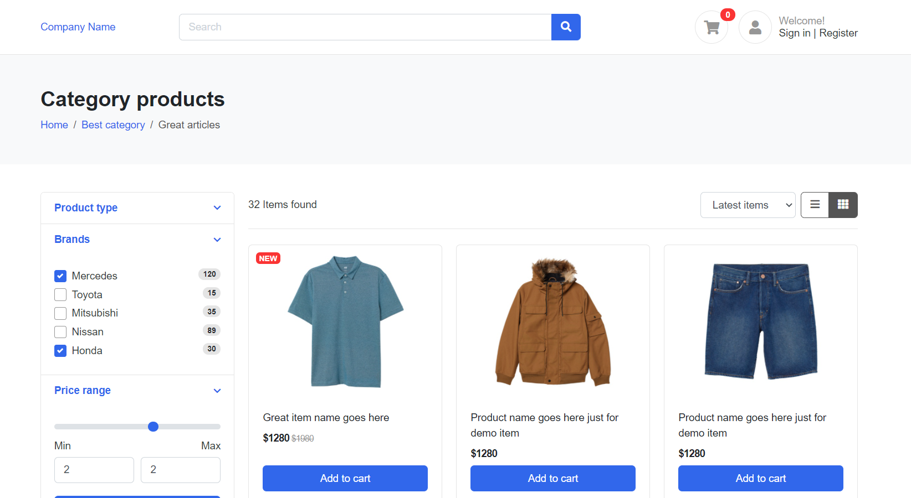

Quiz Site
A dynamic quiz website that presents users with multiple-choice questions, tracks scores, and provides feedback, enhancing user engagement and learning.

Recipe Finder
A web application that enables users to search for recipes based on ingredients or dish names, displaying a list of recipes with images and cooking instructions.

E-commerce Page
An e-commerce product page featuring interactive elements such as image sliders, product details, and an add-to-cart functionality.